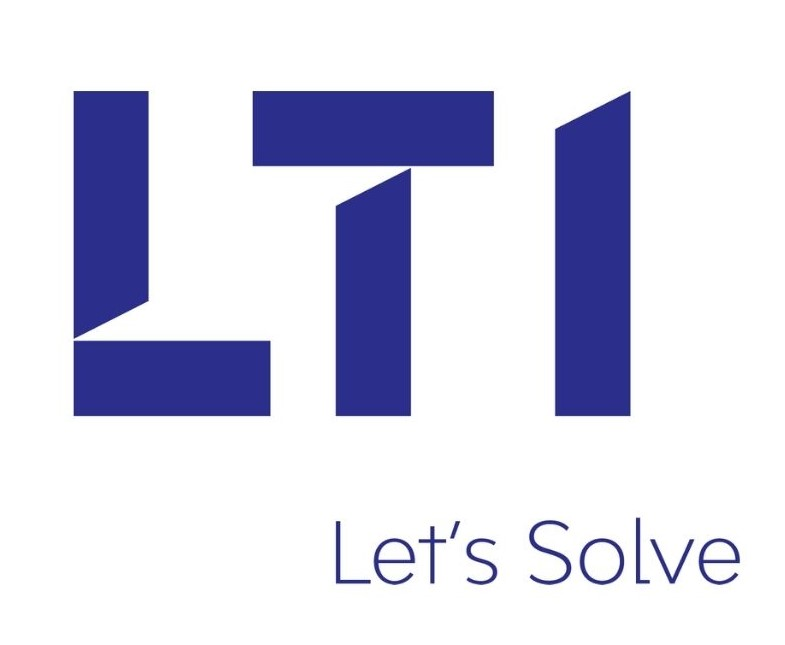

Experience
 Machine Learning Intern
Machine Learning Intern
Vosyn Inc. (Remote) | May 2025 – Present
As a Machine Learning Intern at Vosyn, I work on developing and optimizing AI pipelines for the Cosmos project, which focuses on multimodal audio intelligence. My contributions involve building and refining speech separation models using Demucs and MDX, implementing Whisper-based transcription and diarization pipelines, and integrating real-time evaluation metrics such as SIR, SDR, and SI-SDR. I also enhanced the team’s Comet experiment tracking by automating CPU/memory profiling and visualization for performance benchmarking.
A key part of my work involves leveraging Vertex AI for deploying and managing scalable ML workflows. I designed and tested inference endpoints on Vertex AI and implemented prompt-engineered Gemini API modules to generate safe, structured outputs for diagnostic summarization. I contributed to the end-to-end pipeline that captures raw audio, processes model predictions, and compiles comparative evaluation reports automatically in Python and PyTorch.
Beyond model development, I’ve collaborated on improving containerization (using Docker), reproducible training environments, and code modularization for integration with our production API. This internship strengthened my skills in PyTorch, Whisper, Demucs, Comet ML, Vertex AI, and Gemini Pro, while giving me hands-on experience in scaling ML research into production-ready systems.
Graduate Teaching Assistant – Software Engineering & AR/VR
University of North Texas | Jan 2025 – PresentAs a Teaching Assistant, I support two graduate-level courses — Software Engineering and AR/VR Development. My work goes beyond grading assignments; I actively mentor students during hands-on lab sessions, guide them through Unity and MRTK3-based projects, and troubleshoot real-time development issues. Whether it’s reviewing design proposals, helping debug Unity scripts, or introducing students to version control best practices, I serve as a resource for both technical and strategic guidance. I’ve also led mini-workshops and code reviews to help students improve their coding confidence and presentation skills.
Graduate Research Assistant
University of North Texas | Jan 2024 – PresentAs a Research Assistant, I work across AI, Generative AI, and Spatial Computing to develop real-world tech solutions. I build intelligent chatbot systems using LLMs and prompt engineering, and create immersive AR applications in Unity with tools like MRTK3, Cesium, and Photon to enable interactive spatial experiences.
I’ve contributed to real-time evacuation and navigation systems, supported emergency response modeling, and helped design user-centric applications that improve accessibility and contextual awareness. My work also involves training models on domain-specific datasets, analyzing user behavior data, and collaborating on academic research that explores the social impact of AI-powered tools in real-world environments.
Currently, I’m expanding my research into neurotechnology by working with Emotiv EEG devices to explore brain-computer interface applications. This includes collecting and analyzing neural signals to understand cognitive states, which can be integrated into adaptive systems that respond to user attention, stress, or mental workload.
Application Development Associate
Accenture | Jun 2023 – Jan 2024At Accenture, I worked on the New Mexico Unified Portal — a Salesforce-based citizen service platform aimed at streamlining public access to state services. I was part of an Agile development team where I contributed to building custom Lightning Web Components (LWCs), Apex classes, and triggers to support complex business logic and dynamic form processing.
I collaborated closely with QA, backend, and product teams to ensure modular development and timely sprint delivery. I also supported data model design, implemented validation rules and Flow automations, and resolved bugs in cross-functional handoff environments. This experience gave me real exposure to cloud-native development, enterprise workflows, and scalable architecture within a client-focused delivery model.
 Software Development Intern
LTIMindtree | Mar 2023 – May 2023During my internship, I focused on web development and backend integration. I built responsive front-end interfaces using HTML, CSS, and JavaScript, while also gaining hands-on experience with SQL databases and PHP. I contributed to debugging cross-browser issues and worked with senior developers to integrate REST APIs for live data communication. The internship helped me understand the full software lifecycle — from UI to backend logic — and sharpened my ability to work in agile sprint environments.